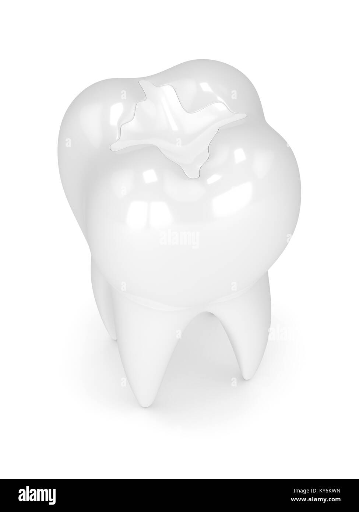
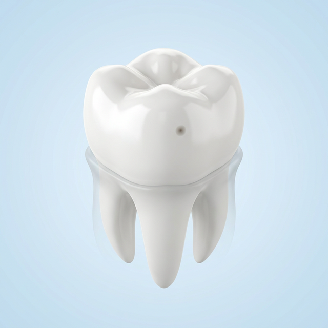
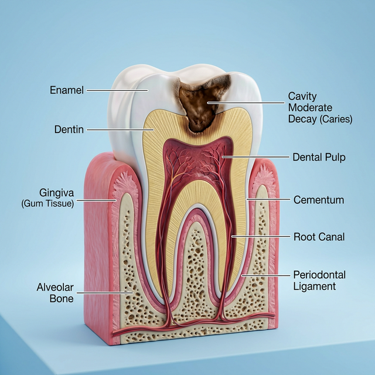
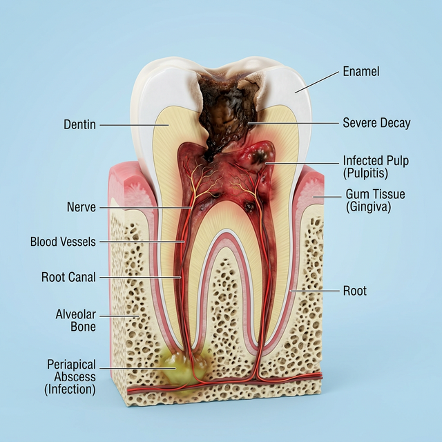
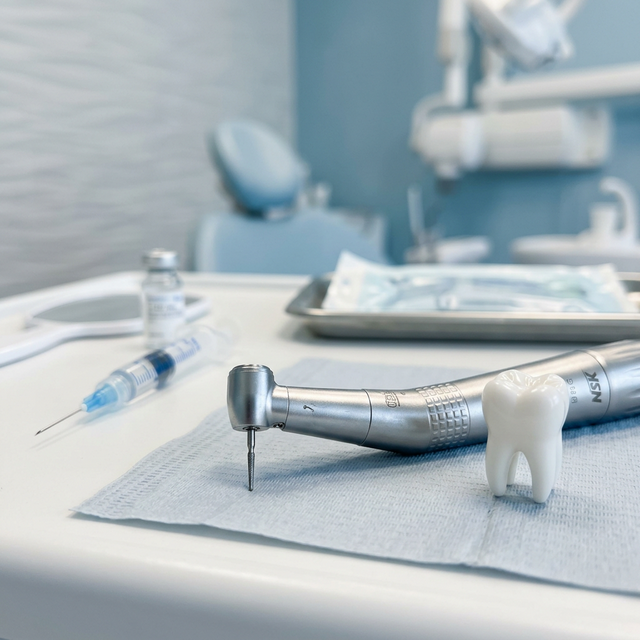
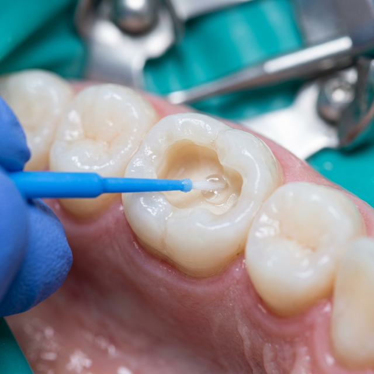
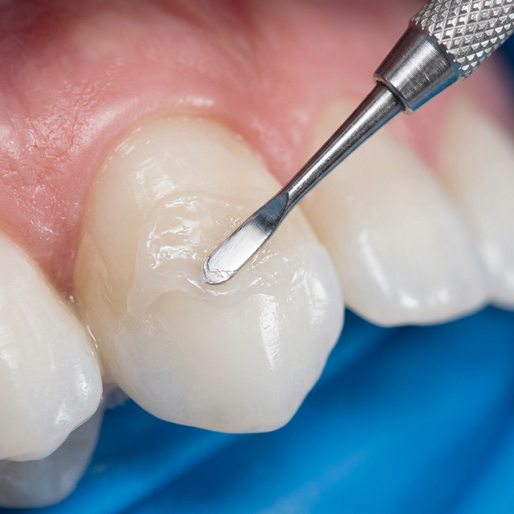
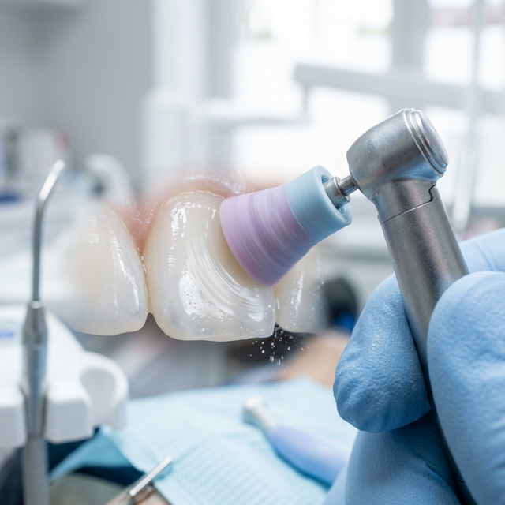
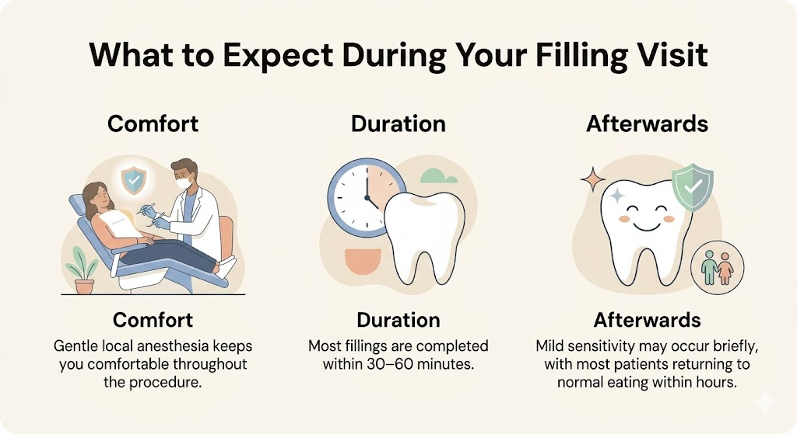
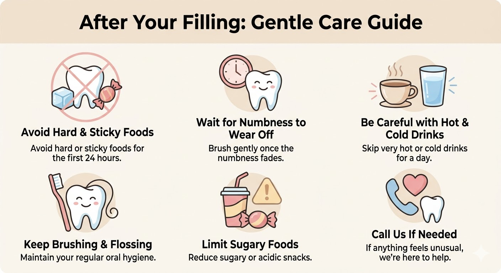

Tooth-Colored Fillings
Restoring the strength of your teeth with invisible, biocompatible materials that blend perfectly with your natural smile.

Stages of Decay: When You Need a Filling
Understanding the stages of a cavity can help you act fast. Early intervention preserves more of your natural tooth and helps you avoid major, painful problems.

1 Stage 1: Enamel Decay
The cavity forms on the hard outer layer of the tooth. This stage is often completely painless, but a visible dark spot or pit might appear. This is the perfect time for a small, conservative filling before the damage spreads.

2 Stage 2: Deeper Dentin Decay
The decay burns through the enamel and reaches the softer, sensitive inner layer of the tooth (dentin). You might start feeling sharp pain or sensitivity to hot, cold, or sweet foods. You need a filling immediately to stop the bacteria from going deeper.

! Too Late: Advanced Infection
If left untreated, the decay eventually reaches the pulp (the nerve center) of the tooth. You may experience severe, lingering toothaches or swelling. At this point, a simple filling will no longer work. To avoid losing the tooth, you will require a more complex Root Canal treatment or an Extraction.
Saving Your Natural Smile
Our approach to fillings is guided by Biomimetic Dentistry. Instead of just "plugging a hole," we focus on re-bonding the tooth together. We use composite resins that mimic the physical properties of natural enamel, ensuring the tooth functions as a single, strong unit again. This conservative method prevents further cracking and protects your long-term dental health.
What Happens During Your Visit

1 Preparation & Numbing
We ensure the area is completely numb using gentle techniques. We only remove the damaged or decayed portion, leaving as much healthy tooth as possible.

2 Cleaning & Priming
The tooth is thoroughly cleaned. We then apply a specialized primer that prepares the surface for a strong, long-lasting bond.

3 Artistic Layering
We apply the tooth-colored material in thin layers, meticulously shaping it to match the natural contours of your tooth.

4 Final Polishing
Once set, we polish the filling so it feels smooth to your tongue and is virtually invisible to the eye.
What You May Feel
Comfort Level
The procedure is performed under local anesthesia, so you should feel no pain during the treatment itself.
Duration
A single filling usually takes between 30 to 60 minutes, depending on the complexity and location.
Afterwards
You may feel some mild sensitivity for a few days, but most patients return to normal eating within hours.

Looking After Your Restoration
To ensure your filling lasts for years, maintain regular brushing and flossing habits. Avoid biting on extremely hard objects like ice. If you ever feel the filling is reaching "above" your other teeth when you bite, just call us — a simple 5-minute adjustment is often all that's needed.

Frequently Asked Questions
If the treatment is done using GIC (Glass Ionomer Cement), then you can have food after 45 - 1 hour after the treatment. However, if the treatment is done using composite resin, then you can have food after 15 minutes of the treatment.
With good oral hygiene, composite fillings typically last 7-10 years. Regular checkups allow us to monitor their integrity.
Our high-quality resins are highly resistant to staining, though they may gradually dull over many years, just like natural enamel.
Tooth-colored fillings can last for several years if they are well-cared for and maintained properly. However, they may need to be replaced over time as they wear down or become damaged.
Tooth-colored fillings may be slightly more expensive than traditional metal fillings, but many patients find that the natural appearance of tooth-colored fillings is worth the extra cost.
The procedure for getting a tooth-colored filling is generally not painful, although some patients may experience mild discomfort or sensitivity during the process. We will use local anesthesia to numb the area before starting the procedure.
Tooth-colored fillings may discolor or stain over time, especially if you consume a lot of coffee, tea, or other foods and drinks that can stain teeth. Your dentist can help you find ways to maintain the appearance of your fillings and keep them looking their best.
The process for getting a tooth-colored filling typically takes about an hour, although this can vary depending on the size and location of the cavity. We will give you an estimate of how long the procedure will take before starting.
Restore Your Smile With Confidence
Preserve your natural teeth with invisible, long-lasting restorations. Book a consultation to assess your dental health.
Get in Touch
We're ready to discuss your personalized care plan. Fill out the form or reach us directly.